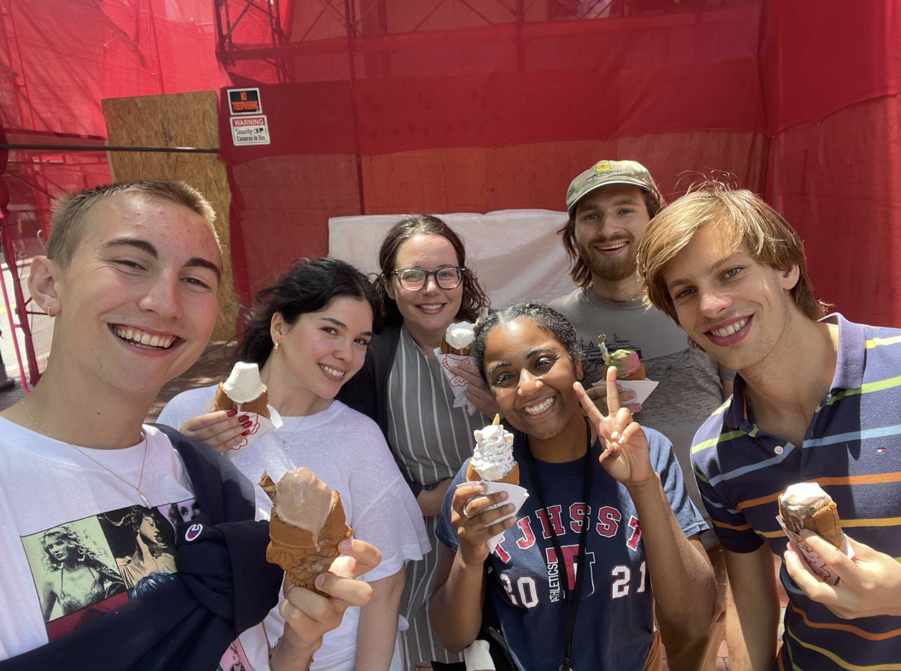
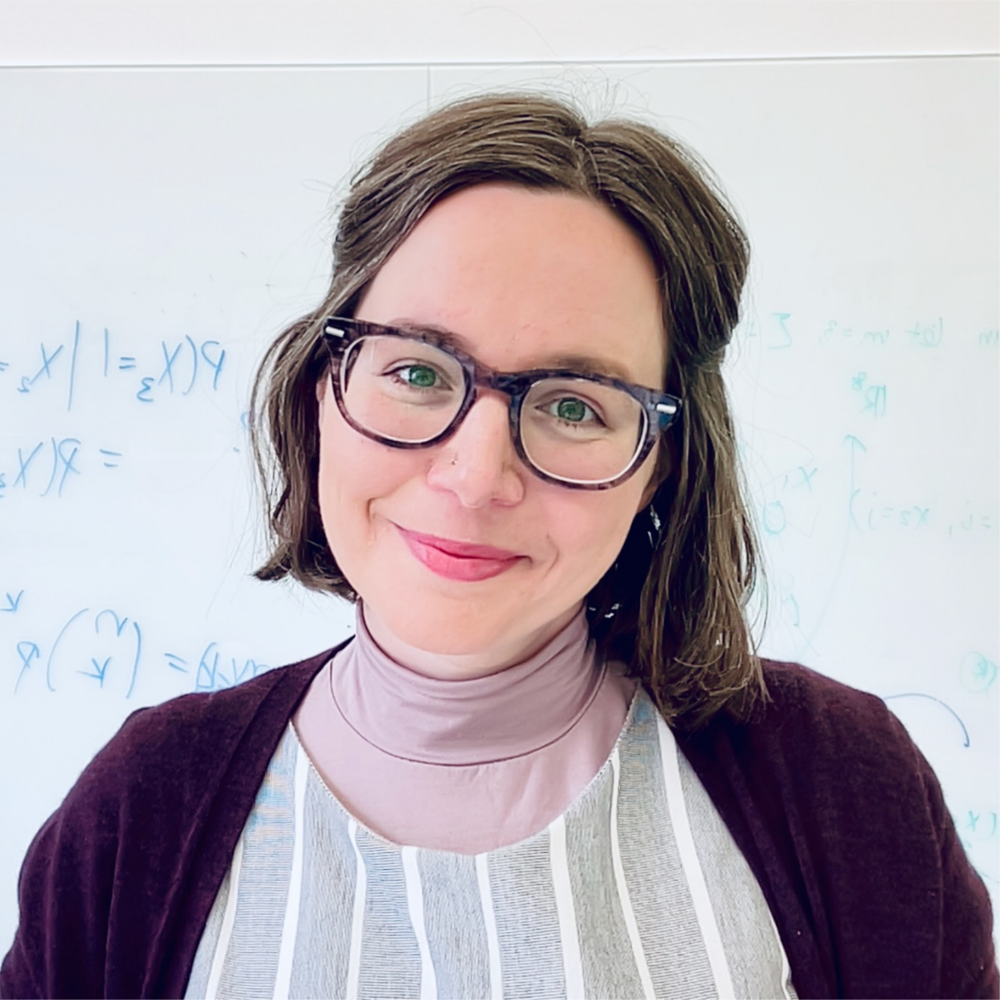

People
The success of UFDS comes from the amazing people involved — helpful collaborators and dedicated student researchers. Gretchen Moisen, who spent a 40 year career at FIA, helped create UFDS with Kelly and served as a project mentor for the first decade. Gretchen also coined the name! Nowadays, the UFDS program occurs most summers and is co-directed by George Gaines, Kelly McConville, and Grayson White. By the numbers, UFDS has involved 37 student fellows, 10 FIA collaborators, and 6 additional research mentors.
Student Research Groups
Bucknell Summer 2025

Student Researchers
Calvin Bailey (Data Analytics ’25, Denison University)
Austin Carroll (Statistics ’26, Bucknell University)
Celine Chang (Applied Mathematics ’27, Bucknell University)
Odilon Ligan (Computer Science & Engineering ’27, Bucknell University)
Will Lindquist (Statistics ’27, Bucknell University)
Jean Marie Ngabonziza (Computer Science & Engineering ’26, Bucknell University)
Fayrene Nguyen (Business Analytics ’27, Bucknell University)
FIA Collaborators
- Tracey Frescino and Andy Lister
Project Mentors:
- Rebecca Beneroff (Biology BA ’25, Biology MA ’27, Bucknell University)
Project Co-Directors:
- George Gaines, Kelly McConville, and Grayson White
Harvard Summer 2023
Student Researchers
Dinan Elsyad (Statistics ’25, Harvard University)
Lal Kablan (Psychology and Economics ’25, Harvard University)
Niels Korsgaard (Statistics ’25, Harvard University)
Thor Reimann (Religion, Environmental Science, and Public Policy ’25, Harvard University)
FIA Collaborators
- Brett Butler, Jesse Caputo, Tracey Frescino, Sara Goeking
Project Mentor
- Kate Hu
Project Co-Directors:
- George Gaines, Kelly McConville, and Grayson White

Harvard Summer 2022

Student Researchers
Asteria Chilambo (Mathematics ’23, Harvard University)
Julian Schmitt (Applied Mathematics ’23, Harvard University)
Jing Shang (Economics ’23, Fudan University)
Maxwell VanLandschoot (Economics ’22, Reed College)
Joshua Yamamoto (Mathematics with a Concentration in Statistics ’23, Reed College)
FIA Collaborators
- Ray Czaplewsk, Tracey Frescino, Sara Goeking, Gretchen Moisen, Lara Murray, Chris Woodall
Project Mentors
- Kate Hu, Holly Munro, Steve Prisley
Project Co-Directors:
- George Gaines, Kelly McConville, and Grayson White
Reed Summer 2021
Student Researchers
Sam Olson (Mathematics-Economics ’17, Reed College)
Grayson White (Mathematics with a Concentration in Statistics ’21, Reed College)
Olek Wojcik (Mathematics-Economics ’21, Reed College)
FIA Collaborators
- Tracey Frescino
Project Co-Directors:
- Kelly McConville and Gretchen Moisen
Reed Summer 2020

Student Researchers
Maddie Basil (English ’21, Swarthmore College)
Isabelle Caldwell (Economics ’23, Reed College)
Alex Flowers (Mathematics with Emphasis in Statistics ’21, Swarthmore College)
Shulav Neupane (Economics ’20, Reed College)
Sam Olson (Mathematics-Economics ’17, Reed College)
Olek Wojcik (Mathematics-Economics ’21, Reed College)
FIA Collaborators
- Tracey Frescino and Chris Toney
Project Co-Directors:
- Kelly McConville and Gretchen Moisen
Reed Summer 2019
Student Researchers
Maddie Basil (English ’21, Swarthmore College)
Alex Flowers (Mathematics with Emphasis in Statistics ’21, Swarthmore College)
Iris Griffith (Mathematics with a Concentration in Statistics ’20, Reed College)
Salma Huque (Economics ’20, Reed College)
Sarah Maebius (Mathematics with a Concentration in Statistics ’21, Reed College)
Miranda Rintoul (Mathematics with a Concentration in Statistics ’19, Reed College)
FIA Collaborators
- Tracey Frescino and Chris Toney
Project Co-Directors:
- Kelly McConville and Gretchen Moisen

Swarthmore Spring 2018

Student Researchers
Shirley Cheung (Mathematics ’18, Swarthmore College)
Kevin Lai (Economics, Mathematics ’18, Swarthmore College)
Lan Anh Ngo Quy (Mathematics, Computer Science ’19, Swarthmore College)
Pravadh Singh (Computer Science, Mathematics ’18, Swarthmore College)
FIA Collaborator
- Tracey Frescino
Project Co-Directors:
- Kelly McConville and Gretchen Moisen
Swarthmore Fall 2017
Student Researchers
Leon Chen (Computer Science, Mathematics with Emphasis in Statistics ’18, Swarthmore College)
Shirley Cheung (Mathematics ’18, Swarthmore College)
Jacob Gichan (Mathematics, Classical Studies ’18, Swarthmore College)
Kevin Lai (Economics, Mathematics ’18, Swarthmore College)
Sida (Mick) Li (Mathematics, Philosophy ’18, Swarthmore College)
Lan Anh Ngo Quy (Mathematics, Computer Science ’19, Swarthmore College)
FIA Collaborator
- Tracey Frescino
Project Co-Directors:
- Kelly McConville and Gretchen Moisen
Swarthmore Spring 2016
Student Researchers
Becky Tang (Computer Science, Mathematics ’18, Swarthmore College)
George Zhu (Mathematics, Philosophy ’17, Swarthmore College)
FIA Collaborator
- Tracey Frescino
Project Co-Directors:
- Kelly McConville and Gretchen Moisen
Whitman Fall 2013 & Spring 2014
Student Researchers
- Cooper Schumacher (Mathematics ’14, Whitman College)
FIA Collaborator
- Tracey Frescino
Project Co-Directors:
- Kelly McConville and Gretchen Moisen
FIA Collaborators and Other Mentors
Brett Butler (Research Forester, FIA). Summer 2023.
Jesse Caputo (Research Forester, FIA). Summer 2023.
Ray Czaplewski (Retired FIA Scientist). Summer 2022.
Tracey Frescino (Forester, FIA). Fall 2013 - present.
Andy Lister (Research Forester, FIA). Summer 2025.
Sara Goeking (FIA National Program Manager, FIA). Summer 2022 and 2023.
Kate Hu (Assistant Professor of Statistics, Ohio State University). Summer 2022 and 2023.
Gretchen Moisen (Retired FIA Research Forester, Skier, Foiling Surfer). Fall 2013 - 2022.
Holly Munro (Senior Research Scientist, NCASI). Summer 2022.
Lara Murray (Principal Owner, Seris Forest Analytics). Summer 2022.
Steve Prisley (Consultant, Formerly Principal Research Scientist, NCASI). Summer 2022.
Chris Toney (Biological Scientist, FIA). Summer 2019 - 2020.
Chris Woodall (Director of U.S. Forest Science and Policy, CTrees). Summer 2022.
Co-Directors

Research Mathematical Statistician, FIA

Director, Dominguez Center for Data Science, Bucknell University

Visiting Assistant Professor of Statistics, Reed College